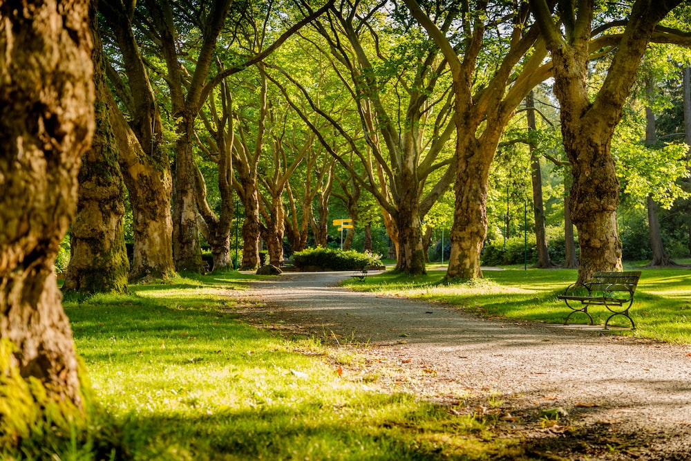

All about my Projects
I have carried out several projects in areas of development and computer networks
Website of a park
- Used html and css.
- Contributed to at least 30% of the work.
- Identified and fixed 8 bugs while making the site responsive.
Web app portal

- Used html and css and Django.
- Contributed to at least 40% of the work.
- Identified and fixed 8 bugs in the backend.
Student Registration web application

- Used html, css, javascript and Express.
- Contributed to at least 30% of the work.
- Resolved at least 9 backend issues in the JSON file
Hospital management system

- Used java and mysql database
- Contributed to at least 30% of the work with a team of seven
- Created dynamic java pages which got data from the database